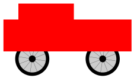
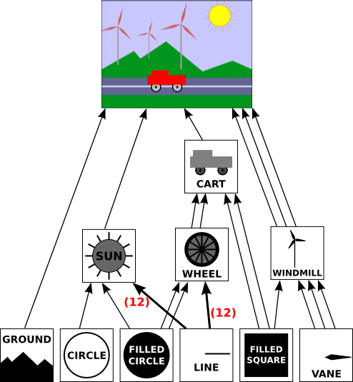
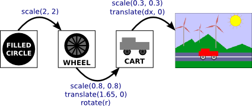

In this section, we look at how complex scenes can be built from very simple shapes. The key is hierarchical structure. That is, a complex object can be made up of simpler objects, which can in turn be made up of even simpler objects, and so on until it bottoms out with simple geometric primitives that can be drawn directly. This is called hierarchical modeling. We will see that the transforms that were studied in the previous section play an important role in hierarchical modeling.
Hierarchical structure is the key to dealing with complexity in many areas of computer science (and in the rest of reality), so it be no surprise that it plays an important role in computer graphics.
A major motivation for introducing a new coordinate system is that it should be possible to use the coordinate system that is most natural to the scene that you want to draw. We can extend this idea to individual objects in a scene: When drawing an object, use the coordinate system that is most natural for the object.
Usually, we want an object in its natural coordinates to be centered at the origin, (0,0), or at least to use the origin as a convenient reference point. Then, to place it in the scene, we can use a scaling transform, followed by a rotation, followed by a translation to set its size, orientation, and position in the scene. Recall that transformations used in this way are called modeling transformations. The transforms are often applied in the order scale, then rotate, then translate, because scaling and rotation leave the reference point, (0,0), fixed. Once the object has been scaled and rotated, it's easy to use a translation to move the reference point to any desired point in the scene. (Of course, in a particular case, you might not need all three operations.) Remember that in the code, the transformations are specified in the opposite order from the order in which they are applied to the object and that the transformations are specified before drawing the object. So in the code, the translation would come first, followed by the rotation and then the scaling. Modeling transforms are not always composed in this order, but it is the most common usage.
The modeling transformations that are used to place an object in the scene should not affect other objects in the scene. To limit their application to just the one object, we can save the current transformation before starting work on the object and restore it afterwards. How this is done differs from one graphics API to another, but let's suppose here that there are subroutines saveTransform() and restoreTransform() for performing those tasks. That is, saveTransform will make a copy of the modeling transformation that is currently in effect and store that copy. It does not change the current transformation; it merely saves a copy. Later, when restoreTransform is called, it will retrieve that copy and will replace the current modeling transform with the retrieved transform. Typical code for drawing an object will then have the form:
saveTransform()
translate(dx,dy) // move object into position
rotate(r) // set the orientation of the object
scale(sx,sy) // set the size of the object
.
. // draw the object, using its natural coordinates
.
restoreTransform()
Note that we don't know and don't need to know what the saved transform does. Perhaps it is simply the so-called identity transform, which is a transform that doesn't modify the coordinates to which it is applied. Or there might already be another transform in place, such as a coordinate transform that affects the scene as a whole. The modeling transform for the object is effectively applied in addition to any other transform that was specified previously. The modeling transform moves the object from its natural coordinates into its proper place in the scene. Then on top of that, a coordinate transform that is applied to the scene as a whole would carry the object along with it.
Now let's extend this idea. Suppose that the object that we want to draw is itself a complex entity, made up of a number of smaller objects. Think, for example, of a potted flower made up of pot, stem, leaves, and bloom. We would like to be able to draw the smaller component objects in their own natural coordinate systems, just as we do the main object. For example, we would like to specify the bloom in a coordinate system in which the center of the bloom is at (0,0). But this is easy: We draw each small component object, such as the bloom, in its own coordinate system, and use a modeling transformation to move the sub-object into position within the main object. We are composing the complex object in its own natural coordinate system as if it were a complete scene.
On top of that, we can apply another modeling transformation to the complex object as a whole, to move it into the actual scene; the sub-objects of the complex object are carried along with it. That is, the overall transformation that applies to a sub-object consists of a modeling transformation that places the sub-object into the complex object, followed by the transformation that places the complex object into the scene.
In fact, we can build objects that are made up of smaller objects which in turn are made up of even smaller objects, to any level. For example, we could draw the bloom's petals in their own coordinate systems, then apply modeling transformations to place the petals into the natural coordinate system for the bloom. There will be another transformation that moves the bloom into position on the stem, and yet another transformation that places the entire potted flower into the scene. This is hierarchical modeling.
Let's look at a little example. Suppose that we want to draw a simple 2D image of a cart with two wheels.

This cart is used as one part of a complex scene in an example below. The body of the cart can be drawn as a pair of rectangles. For the wheels, suppose that we have written a subroutine
drawWheel()
that draws a wheel. This subroutine draws the wheel in its own natural coordinate system. In this coordinate system, the wheel is centered at (0,0) and has radius 1.
In the cart's coordinate system, I found it convenient to use the midpoint of the base of the large rectangle as the reference point. I assume that the positive direction of the y-axis points upward, which is the common convention in mathematics. The rectangular body of the cart has width 6 and height 2, so the coordinates of the lower left corner of the rectangle are (-3,0), and we can draw it with a command such as fillRectangle(-3,0,6,2). The top of the cart is a smaller red rectangle, which can be drawn in a similar way. To complete the cart, we need to add two wheels to the object. To make the size of the wheels fit the cart, they need to be scaled. To place them in the correct positions relative to body of the cart, one wheel must be translated to the left and the other wheel, to the right. When I coded this example, I had to play around with the numbers to get the right sizes and positions for the wheels, and I found that the wheels looked better if I also moved them down a bit. Using the usual techniques of hierarchical modeling, we save the current transform before drawing each wheel, and we restore it after drawing the wheel. This restricts the effect of the modeling transformation for the wheel to that wheel alone, so that it does not affect any other part of the cart. Here is pseudocode for a subroutine that draws the cart in its own coordinate system:
subroutine drawCart() :
saveTransform() // save the current transform
translate(-1.65,-0.1) // center of first wheel will be at (-1.65,-0.1)
scale(0.8,0.8) // scale to reduce radius from 1 to 0.8
drawWheel() // draw the first wheel
restoreTransform() // restore the saved transform
saveTransform() // save it again
translate(1.5,-0.1) // center of second wheel will be at (1.5,-0.1)
scale(0.8,0.8) // scale to reduce radius from 1 to 0.8
drawWheel() // draw the second wheel
restoreTransform() // restore the transform
setDrawingColor(RED) // use red color to draw the rectangles
fillRectangle(-3, 0, 6, 2) // draw the body of the cart
fillRectangle(-2.3, 1, 2.6, 1) // draw the top of the cart
It's important to note that the same subroutine is used to draw both wheels. The reason that two wheels appear in the picture in different positions is that different modeling transformations are in effect for the two subroutine calls.
Once we have this cart-drawing subroutine, we can use it to add a cart to a scene. When we do this, we apply another modeling transformation to the cart as a whole. Indeed, we could add several carts to the scene, if we wanted, by calling the drawCart subroutine several times with different modeling transformations.
You should notice the analogy here: Building up a complex scene out of objects is similar to building up a complex program out of subroutines. In both cases, you can work on pieces of the problem separately, you can compose a solution to a big problem from solutions to smaller problems, and once you have solved a problem, you can reuse that solution in several places.
Here is a demo that uses the cart in an animated scene:
You can probably guess how hierarchical modeling is used to draw the three windmills in this example. There is a drawWindmill method that draws a windmill in its own coordinate system. Each of the windmills in the scene is then produced by applying a different modeling transform to the standard windmill. Furthermore, the windmill is itself a complex object that is constructed from several sub-objects using various modeling transformations.
It might not be so easy to see how different parts of the scene can be animated. In fact, animation is just another aspect of modeling. A computer animation consists of a sequence of frames. Each frame is a separate image, with small changes from one frame to the next. From our point of view, each frame is a separate scene and has to be drawn separately. The same object can appear in many frames. To animate the object, we can simply apply a different modeling transformation to the object in each frame. The parameters used in the transformation can be computed from the current time or from the frame number. To make a cart move from left to right, for example, we might apply a modeling transformation
translate( frameNumber * 0.1, 0 )
to the cart, where frameNumber is the frame number. In each frame, the cart will be 0.1 units farther to the right than in the previous frame. (In fact, in the actual program, the translation that is applied to the cart is
translate( -3 + 13*(frameNumber % 300) / 300.0, 0 )
which moves the reference point of the cart from -3 to 13 along the horizontal axis every 300 frames. In the coordinate system that is used for the scene, the x-coordinate ranges from 0 to 7, so this puts the cart outside the scene for much of the loop.)
The really neat thing is that this type of animation works with hierarchical modeling. For example, the drawWindmill method doesn't just draw a windmill—it draws an animated windmill, with turning vanes. That just means that the rotation applied to the vanes depends on the frame number. When a modeling transformation is applied to the windmill, the rotating vanes are scaled and moved as part of the object as a whole. This is an example of hierarchical modeling. The vanes are sub-objects of the windmill. The rotation of the vanes is part of the modeling transformation that places the vanes into the windmill object. Then a further modeling transformation is applied to the windmill object to place it in the scene.
The file java2d/HierarchicalModeling2D.java contains the complete source code for a Java version of this example. The next section of this book covers graphics programming in Java. Once you are familiar with that, you should take a look at the source code, especially the paintComponent() method, which draws the entire scene. The same example, using the same scene graph API, is implemented in JavaScript in canvas2d/HierarchicalModel2D.html.
Logically, the components of a complex scene form a structure. In this structure, each object is associated with the sub-objects that it contains. If the scene is hierarchical, then the structure is hierarchical. This structure is known as a scene graph. A scene graph is a tree-like structure, with the root representing the entire scene, the children of the root representing the top-level objects in the scene, and so on. We can visualize the scene graph for our sample scene:

In this drawing, a single object can have several connections to one or more parent objects. Each connection represents one occurrence of the object in its parent object. For example, the "filled square" object occurs as a sub-object in the cart and in the windmill. It is used twice in the cart and once in the windmill. (The cart contains two red rectangles, which are created as squares with a non-uniform scaling; the pole of the windmill is made as a scaled square.) The "filled circle" is used in the sun and is used twice in the wheel. The "line" is used 12 times in the sun and 12 times in the wheel; I've drawn one thick arrow, marked with a 12, to represent 12 connections. The wheel, in turn, is used twice in the cart. (My diagram leaves out, for lack of space, two occurrences of the filled square in the scene: It is used to make the road and the line down the middle of the road.)
Each arrow in the picture can be associated with a modeling transformation that places the sub-object into its parent object. When an object contains several copies of a sub-object, each arrow connecting the sub-object to the object will have a different associated modeling transformation. The object is the same for each copy; only the transformation differs.
Although the scene graph exists conceptually, in some applications it exists only implicitly. For example, the Java version of the program that was mentioned above draws the image "procedurally," that is, by calling subroutines. There is no data structure to represent the scene graph. Instead, the scene graph is implicit in the sequence of subroutine calls that draw the scene. Each node in the graph is a subroutine, and each arrow is a subroutine call. The various objects are drawn using different modeling transformations. As discussed in Subsection 2.3.8, the computer only keeps track of a "current transformation" that represents all the transforms that are applied to an object. When an object is drawn by a subroutine, the program saves the current transformation before calling the subroutine. After the subroutine returns, the saved transformation is restored. Inside the subroutine, the object is drawn in its own coordinate system, possibly calling other subroutines to draw sub-objects with their own modeling transformations. Those extra transformations will have no effect outside of the subroutine, since the transform that is in effect before the subroutine is called will be restored after the subroutine returns.
It is also possible for a scene graph to be represented by an actual data structure in the program. In an object-oriented approach, the graphical objects in the scene are represented by program objects. There are many ways to build an object-oriented scene graph API. For a simple example implemented in Java, you can take a look at java2d/SceneGraphAPI2D.java. This program draws the same animated scene as the previous example, but it represents the scene with an object-oriented data structure rather than procedurally. The same scene graph API is implemented in JavaScript in the live demo shown earlier on this page, and you might take a look at its source code after you read about HTML canvas graphics in Section 2.6.
In the example program, both in Java and in JavaScript, a node in the scene graph is represented by an object belonging to a class named SceneGraphNode. SceneGraphNode is an abstract class, and actual nodes in the scene graph are defined by subclasses of that class. For example, there is a subclass named CompoundObject to represent a complex graphical object that is made up of sub-objects. A variable, obj, of type CompoundObject includes a method obj.add(subobj) for adding a sub-object to the compound object.
When implementing a scene graph as a data structure made up of objects, a decision has to be made about how to handle transforms. One option is to allow transformations to be associated with any node in the scene graph. In this case, however, I decided to use special nodes to represent transforms as objects of type TransformedObject. A TransformedObject is a SceneGraphNode that contains a link to another SceneGraphNode and also contains a modeling transformation that is to be applied to that object. The modeling transformation is given in terms of scaling, rotation, and translation amounts that are instance variables in the object. It is worth noting that these are always applied in the order scale, then rotate, then translate, no matter what order the instance variables are set in the code. If you want to do a translation followed by a rotation, you will need two TransformedObjects to implement it, since a translation plus a rotation in the same TransformedObject would be applied in the order rotate-then-translate. It is also worth noting that the setter methods for the scaling, rotation, and translation have a return value that is equal to the object. This makes it possible to chain calls to the methods into a single statement such as
transformedObject.setScale(5,2).setTranslation(3.5,0);
and even say things like
world.add( new TransformedObject(windmill).setScale(0.4,0.4).setTranslation(2.2,1.3) );
This type of chaining can make for more compact code and can eliminate the need for a lot of extra temporary variables.
Another decision has to be made about how to handle color. One possibility would be to make a ColoredObject class similar to TransformedObject. However, in this case I just added a setColor() method to the main ScreenGraphNode class. A color that is set on a compound object is inherited by any sub-objects, unless a different color is set on the sub-object. In other words, a color on a compound object acts as a default color for its sub-objects, but color can be overridden on the sub-objects.
In addition to compound objects and transformed objects, we need scene graph nodes to represent the basic graphical objects that occupy the bottom level of the scene graph. These are the nodes that do the actual drawing in the end.
For those who are familiar with data structures, I will note that a scene graph is actually an example of a "directed acyclic graph" or "dag." The process of drawing the scene involves a traversal of this dag. The term "acyclic" means that there can't be cycles in the graph. For a scene graph, this is the obvious requirement that an object cannot be a sub-object, either directly or indirectly, of itself.
Suppose that you write a subroutine to draw an object. At the beginning of the subroutine, you use a routine such as saveTransform() to save a copy of the current transform. At the end of the subroutine, you call restoreTransform() to reset the current transform back to the value that was saved. Now, in order for this to work correctly for hierarchical graphics, these routines must actually use a stack of transforms. (Recall that a stack is simply a list where items can be added, or "pushed," onto one end of the list and removed, or "popped," from the same end.) The problem is that when drawing a complex object, one subroutine can call other subroutines. This means that several drawing subroutines can be active at the same time, each with its own saved transform. When a transform is saved after another transform has already been saved, the system needs to remember both transforms. When restoreTransform() is called, it is the most recently saved transform that should be restored.
A stack has exactly the structure that is needed to implement these operations. Before you start drawing an object, you would push the current transform onto the stack. After drawing the object, you would pop the transform from the stack. Between those two operations, if the object is hierarchical, the transforms for its sub-objects will have been pushed onto and popped from the stack as needed.
Some graphics APIs come with transform stacks already defined. For example, the original OpenGL API includes the functions glPushMatrix() and glPopMatrix() for using a stack of transformation matrices that is built into OpenGL. The Java Graphics2D API does not include a built-in stack of transforms, but it does have methods for getting and setting the current transform, and the get and set methods can be used with an explicit stack data structure to implement the necessary operations. When we turn to the HTML canvas API for 2D graphics, we'll see that it includes functions named save() and restore() that are actually push and pop operations on a stack. These functions are essential to implementing hierarchical graphics for an HTML canvas.
Let's try to bring this all together by considering how it applies to a simple object in a complex scene: one of the filled circles that is part of the front wheel on the cart in our example scene. Here, I have rearranged part of the scene graph for that scene, and I've added labels to show the modeling transformations that are applied to each object:

The rotation amount for the wheel and the translation amount for the cart are shown as variables, since they are different in different frames of the animation. When the computer starts drawing the scene, the modeling transform that is in effect is the identity transform, that is, no transform at all. As it prepares to draw the cart, it saves a copy of the current transform (the identity) by pushing it onto the stack. It then modifies the current transform by multiplying it by the modeling transforms for the cart, scale(0.3,0.3) and translate(dx,0). When it comes to drawing the wheel, it again pushes the current transform (the modeling transform for the cart as a whole) onto the stack, and it modifies the current transform to take the wheel's modeling transforms into account. Similarly, when it comes to the filled circle, it saves the modeling transform for the wheel, and then applies the modeling transform for the circle.
When, finally, the circle is actually drawn in the scene, it is transformed by the combined transform. That transform places the circle directly into the scene, but it has been composed from the transform that places the circle into the wheel, the one that places the wheel into the cart, and the one that places the cart into the scene. After drawing the circle, the computer replaces the current transform with one it pops from the stack. That will be the modeling transform for the wheel as a whole, and that transform will be used for any further parts of the wheel that have to be drawn. When the wheel is done, the transform for the cart is popped. And when the cart is done, the original transform, the identity, is popped. When the computer goes onto the next object in the scene, it starts the whole process again, with the identity transform as the starting point.
This might sound complicated, but I should emphasize that it is something that the computer does for you. Your responsibility is simply to design the individual objects, in their own natural coordinate system. As part of that, you specify the modeling transformations that are applied to the sub-objects of that object. You construct the scene as a whole in a similar way. The computer will then put everything together for you, taking into account the many layers of hierarchical structure. You only have to deal with one component of the structure at a time. That's the power of hierarchical design; that's how it helps you deal with complexity.